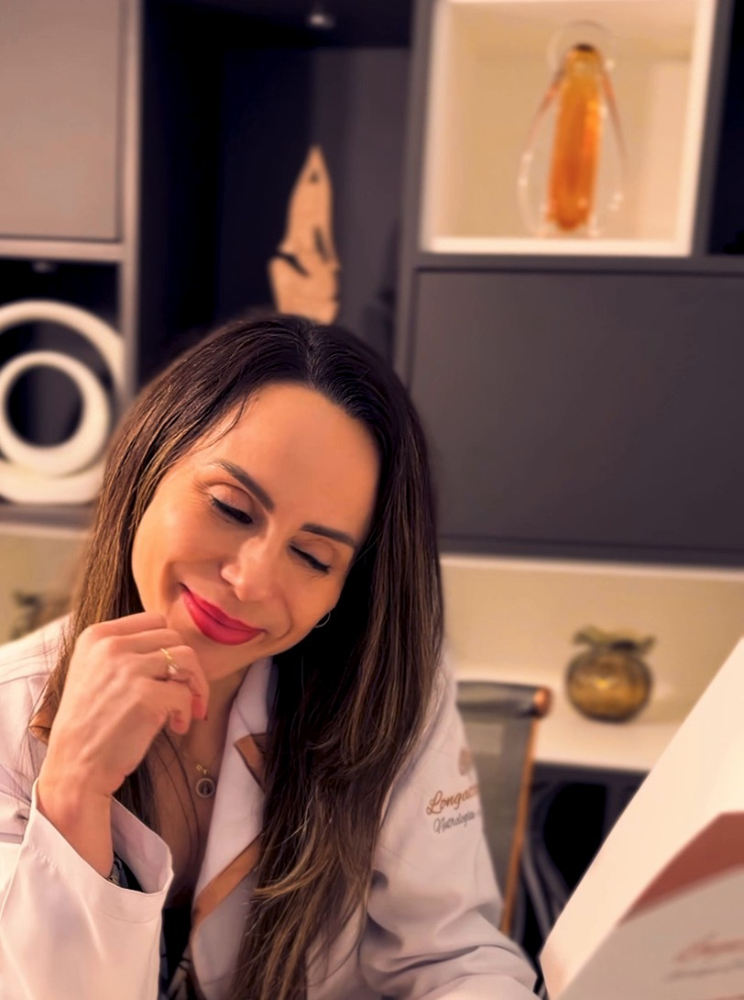
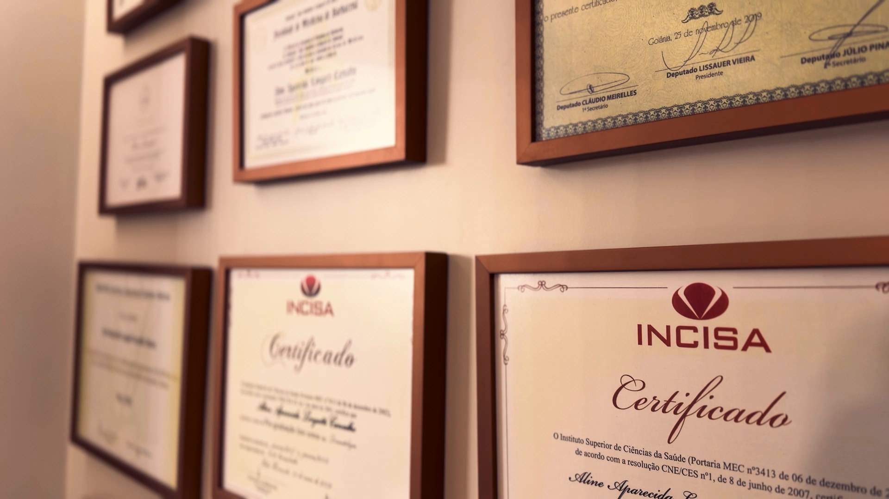
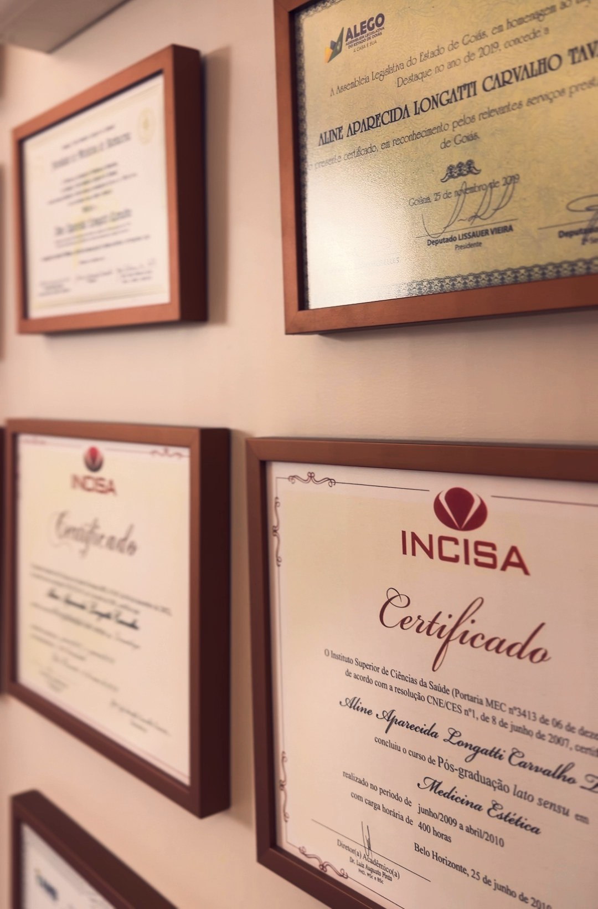

04 — A médica
A médica por trás do cuidado.
Formada em 2006, especialista em Dermatologia e em Nutrologia.

“Sempre levando em consideração o equilíbrio nutricional, o bom funcionamento do organismo e as necessidades de cada paciente.”
Minha forma de trabalho é individualizada e personalizada para cada paciente e necessidade específica.
Minha prática diária de consultório envolve na sua grande maioria casos de doenças de pele, pelo e unhas, além de tratamentos estéticos […].
Em relação à Nutrologia faço tratamentos de obesidade, performance esportiva […], além de tratamentos de transtornos alimentares […].
“Só se pode alcançar um grande êxito quando nos mantemos fiéis a nós mesmos.”Friedrich Nietzsche, citado por ela no site atual


Trajetória
Romano: Nutrologia · Itálico: Dermatologia
- 2006
Graduação em MedicinaFaculdade de Medicina de Barbacena-MG
- 2009
Especialização em Medicina EstéticaINCISA
- 2017
Membro titularAssociação Brasileira de Nutrologia (ABRAN)
- 2021
Membro titularSociedade Brasileira de Dermatologia (SBD)
- Ano a confirmar
Especialização em Medicina EstéticaIAAM/ASIME
- Ano a confirmar
Especialista em NutrologiaAssociação Brasileira de Nutrologia (ABRAN)
- Ano a confirmar
Especialista em DermatologiaSociedade Brasileira de Dermatologia (SBD)
- Ano a confirmar
Membro titularSociedade Brasileira de Cirurgia Dermatológica (SBCD)
- Registro
- CRM 13210-GO
- Nutrologia
- RQE 11992
- Dermatologia
- RQE 15427